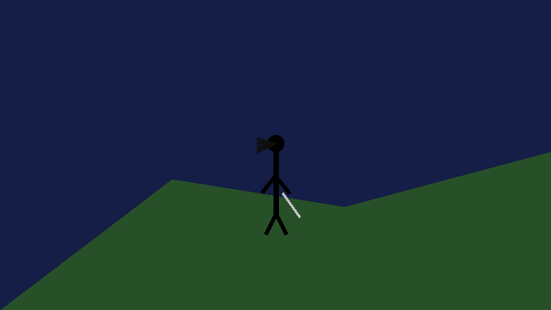

Captains Log

July 13th 2026
Psych
One of my favorite TV shows has got to be Psych. My wife and I have wathced every episode several times. I wonder if that is because the pop culture references made in the show are ones we get. The actors and characters are older than we are, and some of the references are not things we experienced first hand, but we are aware of them. I also enjoy the light hearted way the two main characters go about solving crimes. It's fun, even when it shouldn't be.
I think, today in particular, social relationships are hard to maintain. Shawn and Guss in the show Psych are great role models though. Yes Shawn takes advantage of Guss' good nature, but he also pulls him out of his shell and they both genuinely love each other. I would be surprised to find that the actors are not in fact best friends.
Mostly because of their on-screen relationship and chemistry the show becomes more than a crime drama or comedy. It becomes relatable, and probably aspirational. I think we all want a close relationship like that, to some degree or another.
I'm also convinced that I could be a Psychic detective, as it doesn't seem all that hard.
Amazon Rant
I was going through the list of required materials for the GridCube. I'm not doing lights, at least not on my first one, and probably not on any of them if I'm being honest, but I saw that I needed some bearings. Of course they are metric and cannot be purcahsed at a local hardware store. Which forced me to use Amazon.
Normally I don't mind too much using them, but if its hardware I feel like I should be able to source that locally. I shouldn't have to rely on the multi-billion dollar devil retail, that is Amazon. Also lately I have bene placing orders for things on Amazon, and they tell me I can get it next day, or 2 days later, only it doens't ship the next day or even two days later. This is a self inflicted problem. I didn't have next day expectations until they told me it could be, but then it wasn't.
Recently when I purchased my MacBook Neo I originally purchased it on Amazon. This is because I wanted the Indigo color, and that was not available at m local Best Buy. When I checked Amazon they said it would arrive next day. When next day occurred and it hadn't shipped or any other notification had not been sent I cancelled it. I didn't ask Amazon for that option, they offered it to me!
In the end I drove to a different Best Buy that did have the color I wanted. It was a quick 30 minute trip, which is what I should have done originally.
Laughably Bad AI Generation
Yesterday I was generating images with AI to add to my Hobbies page. If you click the link you will be directed to what I'm talking about. For the headings for Reading and Writing I used AI to make a picture of someon who looks similar to me doing these activities.
The actual prompt I used is:
"Create a picture of an overweight guy writing a book; but the background should be a fantasy scene that he is imagining while writing. Include a tower and a red dragon in the background"
The problem is the first image was morbidly and grossly obese! So I refined the prompt:
"Make the man less obese, and give him long shoulder length black hair"
This was more inline with what I wanted and was thinking, and I was mostly happy with the result.
Since I was having fun I asked it to use that same model and make a gif for me. The gif is below... It's bad.. but I did get a good laugh out of it. In it's defense co-pilot, which is the AI I used gave me this explanation on why it was so bad:
"What you asked for was essentially a cinematic fantasy character animation, and what I gave you was a stick figure on a hill from a 1998 PowerPoint project. The limitation is that I can generate high-quality still images, but I don't have a proper video/GIF generation model available here that can take the previous sci‑fi character and animate him realistically. The GIF I created was a simple programmatic animation, which is why it looked so bad."
